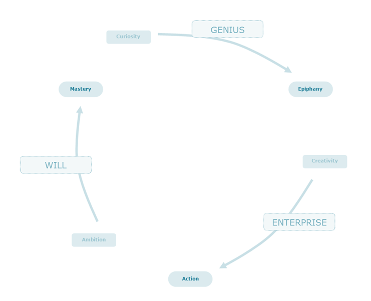

Over time, I made mental notes about stories that inspired me, and analysed the elements embodied in those stories. These are the essential ingredients that give me compelling motivation and jolts of energy, and make me feel most excited about life.
Then I figured, to be happy, I must get closer to these values. They are a practical guide for evaluating attitudes and actions and for choosing what to do and where to be.
This is also a study of qualities, to look around and learn from others: what are the ingredients that lead to success? Those who achieved something remarkable have done so because of their attitudes, beliefs and way of thinking, their bias for action. It’s a study of what we look for in people and who we aspire to become.
I often search for role-models, people that are "englightened": when we look at a star company, a great team, and wonder how come they are doing all the right things. Why are they so great?
It’s not that they are innately psychic to know the right things from the start, but that they are innately apt – they have through years of experience and reflection cultivated a mindset of aptitude. They are sensitive to how the world is progressing. They learn really fast, they ‘click on’ to the best practices quickly.
To build a great company, to build anything great, it’s always the people. No one can do it alone. In every case, success and excellence sprang from a team of people embued with high intelligence, high reliability and high energy. As importantly, they are people with this aptitude, this ability to become "enlightened".
The people around us shape where we go. The values are also a roadmap for networking, to meet the like-minded, to create an environment of inspiring, uplifting and enabling influences, fresh, vigorous, beaming with pioneer spirit, and ultimately, to illuminate once again the true meaning of ‘company’: to work on great things with great people.
Genius in mythology is a capricious spirit that possesses people into a trance of creativity. As if we mortals are destined to be dull! Yet we often see students who spend years in an entire course, sledging through dozens 600-page books, perfectly content with having never tried it outside the building.
Genius is this infinitesimal whisper: “Let me try something different.” It’s the impetus to experiment, to play with it in the real world, to test the theories: goggles ready, soldering gun in hand.
Genius is the indomitable spirit of man, to change rather than suffer, to question, to imagine, to pause and reflect, to examine what is working, what is broken, to challenge practices that are senseless or clumsy, to see beyond the current state of affairs and see the promise land.
Moments of genius visit many; the prize is to care enough to seize them. It takes a sense of ownership, a sincere heart free of cynicism, and the noble belief that one can really make a difference.
Curiosity is an obsession. It’s a relentless fascination, a compulsion, an extraordinary drive to make sense of the world, to figure out how it works. It’s the urge to search every corner for an answer, to turn over every rock at the very edge, to exhaust every strand of possibility; then go further to see what is beyond.
Curiosity is courage. There is great strength in humility: to stare into the unknown, to face the unsettling facts, to end the comfort of denial, to acknowledge the gaps, to be willing to challenge and improve oneself, to be an explorer who is willing to step outdoors and learn something new.
Curiosity is the best antidote to self-delusion. The strong desire to discover creates confidence to conquer the barrier of fear, to get over the habit of hiding behind what is familiar – and instead trust our ability to learn, to figure it out. It’s the origin of intelligence.
Enlightenment is the reward for those who search and ponder, those who have put in the dedication and effort, those who have done their homework; those who have traversed every inch of the entire field to stand at the frontier of discovery. When you are day in day out immersed in the pursuit of knowledge, of solving one puzzle after another; you are destined to hit upon a gem.
This acuity, to see what others are too preoccupied to see, comes from the day to day real work of deliberate practice, the step by step effort to understand the intricate and technical; it comes from standing face-to-face with the glaring questions, never satisfied with a vague push-aside or a dismissive smudge-over; it comes from the insatiable urge to drill deeper.
Then, in a lightning, a heartbeat, comes the ‘Aha’ moment of brilliant, creative insight: the filaments of a thousand light-bulbs flash up, all the dots connect, all the puzzle pieces click, everything fits, everything is clear – the manifestation of a daring vision that lights up the entire hall.
If genius is the daring idea to do something crazy, then enterprise is the craziness to make it happen. It’s a state of mind: spirited, resourceful, robust – it’s the initiative to start doing, to take the next step, to take calculated risks, to move forward – it’s the enabling attitude that every challenge is soluble, is to be embraced with enthusiasm – always ready to take it on, to bounce right back at every turn, to grow and thrive – insuppressible, unbeatable, unstoppable.
An epiphany is like hitting upon a gem; the state of creativity is like discovering a gold mine, a sparkling, lively, flowing stream of endless inspiration, of brilliant ideas. Each moment is a flash of genius, an explosion, a burgeoning spring of unbridled wild dreams; everything is not only possible but infinitely optimistic – the bright, amber glow of light bulbs, the rushing pulse, the orchestra of fireworks, the inventive drive to create, to build, to make something out of nothing, to alter the course of history.
Everything feels bright (this is often induced by caffeine…) the future seems infinitely promising, with an overwhelming feeling of wellbeing and great prospect; goods and services seem universally available and in great abundance; people are affectionate, cooperative and productive. Your mind is eloquent, responsive and decisive, with every bit of its wits readily at call; you can understand and grasp complex concepts instantly, and remember things with ease; you can exercise good judgment and make decisions with great clarity; you know exactly what to do and how to do it; and it all feels right. Action is easy, each emboldening the next. Solutions are instant, intuitive, and lavishly at reach – everything feels effortless: “Life in all its aspects seems not only worth living, but divinely beautiful and significant…”
Ideas are not enough. Thinking without action is just wishing. That’s why the comfort of inaction is dangerous: it allows ideas to stay as vague “nice-to-haves”, as clever remarks of a spectator, no consequences, no impact, brilliance littered in the wind, soon forgotten.
The external conditions will never be ideal. If you wait for the perfect timing, the perfect conditions, for all the stars to be aligned, the world will pass you by. There is no magic dust. If you want something to happen, you must make it happen. Think like an engineer, get hands on, face real risks, and make real progress.
Action is pragmatic. It’s getting down to business. Action forces you to define what exactly you are going to do next; it forces you to clarify the roadmap, to connect desire with reality. It separates the good ideas from the bad – it separates what is practical from the daydreaming.
Action is the laboratory. It’s the habit of being hands-on, of thinking on paper, of solidifying your intent in the real world. Draw a diagram. Build a prototype. Test the waters.
Action forces a focus on substance, on real skills and capabilities. You are the designer, you make the decisions; you are the one who makes it happen – you and nobody else.
Action is optimism: we can work it out, we can make it work. It’s the momentum of getting into it, to start an early draft, to ship a working model, and adjust course along the way. You are not measured by the lack of mistakes, but by progress.
Action is confidence. Problems happen. Machines break down, they even blow up. No dramas. No complaint or panic. Roll up the sleeves and deal with it. Action is the constructive and upbeat spirit to keep going.
In every trade there is a superb level of excellence. You will know when you see a masterpiece, when you admire the work of the best engineers, the best designers, the best typographers, you can see excellence on a single page, on a single line, in every detail of kerning and tracking and ligature, spacing and measure – you see something beyond perfection – you see divine ingenuity.
Yet every champion has paid his dues. It’s easy to philosophize about the cosmos; it’s hard to work through organic chemistry. What really matters is having real skills, real abilities and real value: become exceptionally good at what you do.
What makes a master is a matter of will: the will to confront what you fear the most, the will to overcome avoidance, the will to get to the task, and to keep going. It’s the decisiveness and direction in goal-setting, in prioritizing and selecting projects, in execution; the resolve and grit to go through work that requires immense focus, to face risk, pain, difficulty, bleakness and tedium; and the strength and character to follow through, to action on the uncomfortable.
Ambition is purpose: it’s a serious intent, a sense of direction, resolve and determination – we are not here to fuss around, we are here to conquer. Every effort should be whole-hearted, with total engagement and dedication.
Ambition is the desire to be the best: skills, knowledge, sophistication in research, design, aesthetic taste or market share – whatever one sets out to do, the point is to do it well. It is the zeal for workmanship and greatness, the maniacal pursuit to surpass all records, to bring something extraordinary into existence.
The invention of the airplane was not because some idle wish-maker one afternoon suddenly got graced by this psychic idea of how to build it – it flies only because of the laws of physics, and not ideation – the technology was only discovered and perfected by hard-working, hands-on aviation fanatics who studied and experimented with it day after day, year after year.
The same goes for performing a masterpiece, as for dominating a market. Ambition is not enough. It takes deliberate effort to become the best, to get better and better, day in, day out, charging up that hill. It’s a true test of character.
And this is the playing field of masters, those who are willing and able to continuously push forward, to hone their skills and expand and deepen their knowledge and techniques, to face the gaps and engage them with persistent will, to conquer the things that are daunting – this is precisely the reason they have achieved something exceptional.
[Ideology]